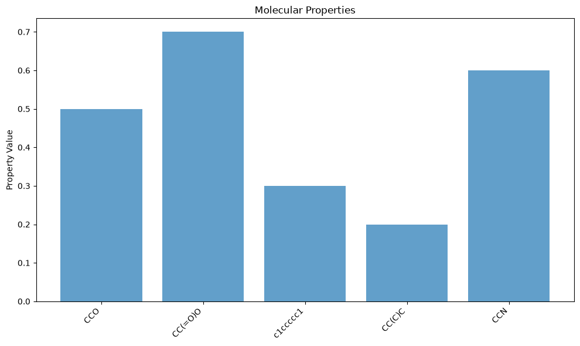
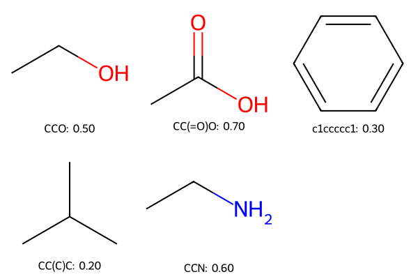

-- coding: utf-8 --#
# [Chapter Title]: [Section Title]#
#
Author: Hosein Fooladi#
License: MIT License#
#
 #
#
## Overview#
#
This notebook demonstrates [brief description of what the notebook covers].#
#
Learning Objectives:#
- First objective#
- Second objective#
- Third objective#
# ## Setup and Dependencies
#
# First, let's install and import the necessary packages.
# Install required packages
!pip install rdkit scikit-learn pandas matplotlib seaborn gpytorch botorch
# Import libraries
import numpy as np
import pandas as pd
import matplotlib.pyplot as plt
import seaborn as sns
from rdkit import Chem
from rdkit.Chem import AllChem, Descriptors, Draw
import torch
import gpytorch
import botorch
# Set random seed for reproducibility
np.random.seed(42)
torch.manual_seed(42)
<torch._C.Generator at 0x7fa00c1a40f0>
## 1. Introduction and Theory#
#
[Brief theoretical background about the topic of this notebook]#
#
[You can include equations using LaTeX format]#
#
$\(f(x) = \mu(x) + \mathcal{K}(x, X)[\mathcal{K}(X, X) + \sigma^2\mathbf{I}]^{-1}(y - \mu(X))\)$#
## 2. Data Preparation#
#
[Instructions for preparing data, loading datasets, etc.]#
# @title Load and Prepare Data { display-mode: "form" }
# Sample code for loading data
def load_molecular_data():
"""
Load a dataset of molecules with properties.
This function can be adapted to load from CSV, database, etc.
"""
# Sample data for demonstration
data = {
'SMILES': [
'CCO',
'CC(=O)O',
'c1ccccc1',
'CC(C)C',
'CCN'
],
'Property': [0.5, 0.7, 0.3, 0.2, 0.6]
}
return pd.DataFrame(data)
# Load data
data = load_molecular_data()
print(f"Loaded {len(data)} molecules")
display(data.head())
Loaded 5 molecules
| SMILES | Property | |
|---|---|---|
| 0 | CCO | 0.5 |
| 1 | CC(=O)O | 0.7 |
| 2 | c1ccccc1 | 0.3 |
| 3 | CC(C)C | 0.2 |
| 4 | CCN | 0.6 |
## 3. Feature Engineering#
#
[Description of how molecules are represented for machine learning]#
# Calculate molecular fingerprints
def calculate_fingerprints(smiles_list, radius=2, nBits=1024):
"""Calculate Morgan fingerprints for a list of SMILES strings"""
fingerprints = []
valid_mols = []
valid_smiles = []
for smiles in smiles_list:
mol = Chem.MolFromSmiles(smiles)
if mol is not None:
fp = AllChem.GetMorganFingerprintAsBitVect(mol, radius, nBits)
arr = np.zeros((1, nBits))
DataStructs.ConvertToNumpyArray(fp, arr[0])
fingerprints.append(arr[0])
valid_mols.append(mol)
valid_smiles.append(smiles)
return np.array(fingerprints), valid_mols, valid_smiles
# Generate features
from rdkit import DataStructs
X, mols, valid_smiles = calculate_fingerprints(data['SMILES'])
y = data.loc[data['SMILES'].isin(valid_smiles), 'Property'].values
print(f"Generated fingerprints with shape: {X.shape}")
Generated fingerprints with shape: (5, 1024)
[14:35:22] DEPRECATION WARNING: please use MorganGenerator
[14:35:22] DEPRECATION WARNING: please use MorganGenerator
[14:35:22] DEPRECATION WARNING: please use MorganGenerator
[14:35:22] DEPRECATION WARNING: please use MorganGenerator
[14:35:22] DEPRECATION WARNING: please use MorganGenerator
## 4. Model Implementation#
#
[Description of the model implementation]#
# @title Implement Model { display-mode: "form" }
# Example implementation of a Gaussian Process model with RBF kernel
class ExactGPModel(gpytorch.models.ExactGP):
def __init__(self, train_x, train_y, likelihood):
super(ExactGPModel, self).__init__(train_x, train_y, likelihood)
self.mean_module = gpytorch.means.ConstantMean()
self.covar_module = gpytorch.kernels.ScaleKernel(gpytorch.kernels.RBFKernel())
def forward(self, x):
mean_x = self.mean_module(x)
covar_x = self.covar_module(x)
return gpytorch.distributions.MultivariateNormal(mean_x, covar_x)
## 5. Optimization Implementation#
#
[Description of the optimization approach]#
# @title Implement Optimization { display-mode: "form" }
# Example implementation of a simple acquisition function
def expected_improvement(mean, std, best_f, xi=0.01):
"""Expected Improvement acquisition function"""
from scipy.stats import norm
with np.errstate(divide='warn'):
improvement = mean - best_f - xi
Z = improvement / std
ei = improvement * norm.cdf(Z) + std * norm.pdf(Z)
ei[std <= 0.0] = 0.0
return ei
## 6. Experiment and Results#
#
[Description of the experiment and visualization of results]#
# @title Run Experiment and Visualize Results { display-mode: "form" }
# Example code for visualizing molecular properties
plt.figure(figsize=(10, 6))
y_pos = np.arange(len(valid_smiles))
plt.bar(y_pos, y, align='center', alpha=0.7)
plt.xticks(y_pos, valid_smiles, rotation=45, ha='right')
plt.ylabel('Property Value')
plt.title('Molecular Properties')
plt.tight_layout()
plt.show()
# Display molecules with RDKit
img = Draw.MolsToGridImage(mols, molsPerRow=3,
subImgSize=(200, 200),
legends=[f"{s}: {v:.2f}" for s, v in zip(valid_smiles, y)])
display(img)

